Manual Installation
Installing an SDK
Choregraphe IDE
Downloading Choregraphe
Begin by downloading the installer from Aldebaran's website.
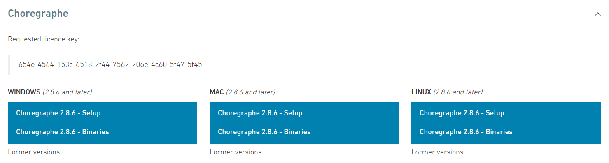
Under the Choregraphe > Linux category, choose Choregraphe 2.8.x - Setup.
Installing Choregraphe
After the software downloads, open your file manager and navigate to your downloads directory. Right click the background, and select "Open in Terminal".
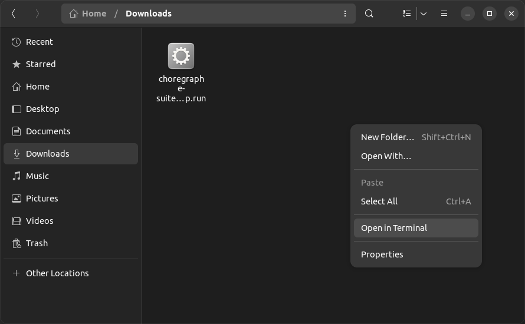
Once in a terminal, give the installer execute permissions:
Then, run the installer.
The operating system will then prompt you for your administrator password. Enter it, then follow the prompts on the Choregraphe installer. Accept the license agreement, then when given the option to choose an installation mode, choose "Quick".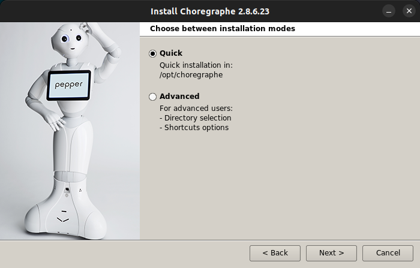
Continue through the installer. Once finished, if given the option, be sure to uncheck "Launch Choregraphe".
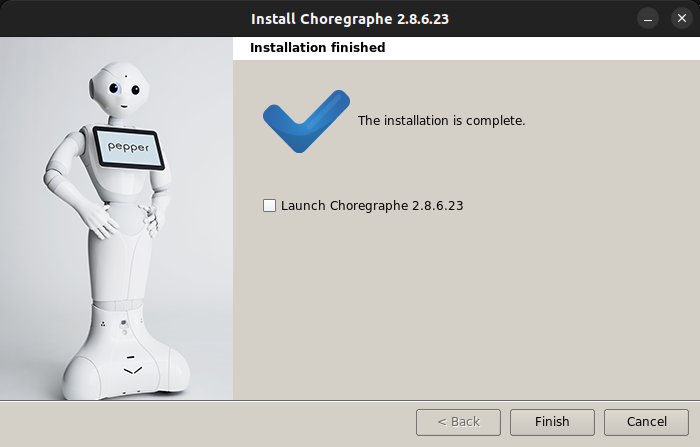
Patching zlib
Choregraphe was developed targeting a version of Ubuntu from 2016. Because of this, we must patch a library in order for the application to launch.
Go back to your terminal, and run the following commands.
This replaces the bundled version of zlib with the version currently installed on the system.
Choregraphe is now successfully installed. Launch it from the Ubuntu Applications Menu.
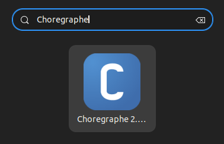
Proceed to creating your first Choregraphe project.
Python SDK
Installing prerequisites
Begin by opening a terminal. Install the required prerequisites.
Downloading the Python SDK
Then, download the SDK package from Aldebaran's website.
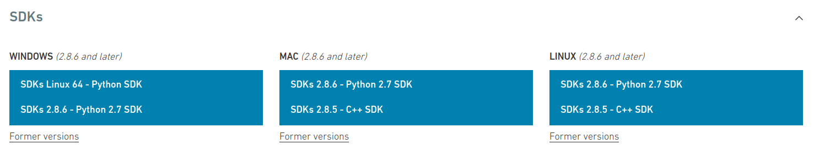
Under the SDKs > Linux category, choose SDKs 2.8.x - Python 2.7 SDK.
Extracting the Python SDK
Go back to your terminal, navigate to where the SDK was downloaded, and extract it.
sudo mkdir -p /opt/naoqi-python-sdk
sudo tar -xf pynaoqi-python2.7-*.tar.gz -C /opt/naoqi-python-sdk --strip-components=1
Updating your $PATH
Now, we need to tell the terminal where to find the Python SDK. To do this, add the following lines to your ~/.bashrc file.
export PYTHONPATH=${PYTHONPATH}:/opt/naoqi-python-sdk/lib/python2.7/site-packages
export QI_SDK_PREFIX=/opt/naoqi-python-sdk
Tip
An easy way to add these lines to your .bashrc without opening a text editor would be to echo the lines into the file.
Next, in order to tell your terminal about the new locations, source the .bashrc file.
Verifying installation
Let's verify the SDK is installed correctly. Open a Python prompt in your terminal.
Then, import the NAOqi library.
You shouldn't see any errors.
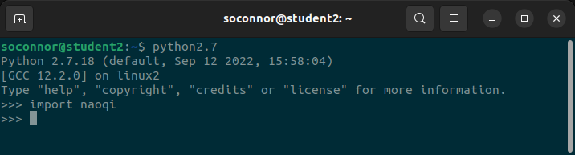
If your output looks like this, installation was successful!
Exit your Python prompt.
Installing Visual Studio Code
Finally, install an IDE. For this tutorial, we'll be using Visual Studio Code.
Install VS Code from the terminal using the snap package manager.
Then, add the Python extension to VS Code.
Your development environment is now set up. Proceed to creating your first Python project.
C++ SDK
Installing prerequisites
Begin by opening a terminal. Install the required prerequisites.
Installing qiBuild
Next, install the qiBuild build system from the pip package manager.
Setting up qiBuild
Now, configure qiBuild. Run the configuration wizard.
The wizard will ask you to choose a CMake generator. Choose 2 Unix Makefiles.
:: Please choose a generator
1 Green Hills MULTI (default)
2 Unix Makefiles
3 Ninja
4 Ninja Multi-Config
5 Watcom WMake
6 CodeBlocks - Ninja
7 CodeBlocks - Unix Makefiles
8 CodeLite - Ninja
9 CodeLite - Unix Makefiles
10 Eclipse CDT4 - Ninja
11 Eclipse CDT4 - Unix Makefiles
12 Kate - Ninja
13 Kate - Unix Makefiles
14 Sublime Text 2 - Ninja
15 Sublime Text 2 - Unix Makefiles
> 2
The wizard will then prompt you to choose an IDE. Choose None.
Updating your $PATH
Add qiBuild to your $PATH, by adding the following line to your .bashrc file.
Tip
An easy way to add these lines to your .bashrc without opening a text editor would be to echo the lines into the file.
Now, in order to tell your terminal about the updated $PATH, source the .bashrc file.
Setting up your worktree
Now, we'll set up a worktree. For this tutorial, the worktree will be located at ~/Documents/naoqi-cpp. This can be changed, however, you'll need to remember the worktree's location.
Start by creating the worktree directory. Go into it, and initialize the worktree.
Downloading the C++ SDK
Then, download the SDK package from Aldebaran's website.
Under the SDKs > Linux category, choose SDKs 2.8.x - C++ SDK.
Extracting the C++ SDK
Go back to your terminal, navigate to where the SDK was downloaded, and extract it.
sudo mkdir -p /opt/naoqi-cpp-sdk
sudo tar -xf naoqi-sdk-*.tar.gz -C /opt/naoqi-cpp-sdk --strip-components=1
Setting up the C++ SDK
Navigate back to the worktree you created earlier, and create a toolchain from the C++ SDK.
Then, add a new configuration to your toolchain.
Installing Visual Studio Code
Finally, install an IDE. For this tutorial, we'll be using Visual Studio Code.
Install VS Code from the terminal using the snap package manager.
Then, add the Python extension to VS Code.
Your development environment is now set up. Proceed to creating your first C++ project.
Other Software
NAO Flasher
Downloading NAO Flasher
Begin by downloading the installer from Aldebaran's website.
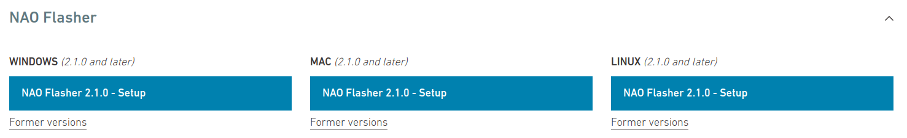
Under the NAO Flasher > Linux category, choose NAO Flasher 2.1.x - Setup.
Extracting NAO Flasher
Open a terminal, navigate to where the SDK was downloaded, and extract it.
sudo mkdir -p /opt/nao-flasher
sudo tar -xvf flasher-*.tar.gz -C /opt/nao-flasher --strip-components=1
Patching zlib
NAO Flasher was developed targeting a version of Ubuntu from 2016. Because of this, we must patch a library in order for the application to launch.
Go back to your terminal, and run the following commands.
This replaces the bundled version of zlib with the version currently installed on the system.
Add Flasher to Applications
Now that we've extracted the flasher, we need to add a launcher to Applications.
Start by creating the launcher file.
Next, add the following text to your newly created launcher.
[Desktop Entry]
Version=1.0
Name=NAO Flasher
GenericName=NAO Flasher
Comment=Launches NAO Flasher
Icon=/opt/robot_settings/share/bootconfig/icons/robot_settings.ico
Exec='pkexec env DISPLAY=$DISPLAY XAUTHORITY=$XAUTHORITY /opt/nao-flasher/flasher'
Terminal=false
Type=Application
Categories=Development
Keywords=Robot;SoftBank Robotics
Tip
An easy way to add these lines to your launcher without opening a text editor would be to echo the lines into the file.
echo "[Desktop Entry]
Version=1.0
Name=NAO Flasher
GenericName=NAO Flasher
Comment=Launches NAO Flasher
Icon=/opt/robot_settings/share/bootconfig/icons/robot_settings.ico
Exec='pkexec env DISPLAY=$DISPLAY XAUTHORITY=$XAUTHORITY /opt/nao-flasher/flasher'
Terminal=false
Type=Application
Categories=Development
Keywords=Robot;SoftBank Robotics" > ~/.local/share/applications/nao-flasher.desktop
Finally, move your newly created launcher file.
NAO Flasher is now successfully installed. Launch it from the Ubuntu Applications Menu.
Proceed to Flashing your NAO.
Robot Settings
Downloading Robot Settings
Begin by downloading the installer from Aldebaran's website.
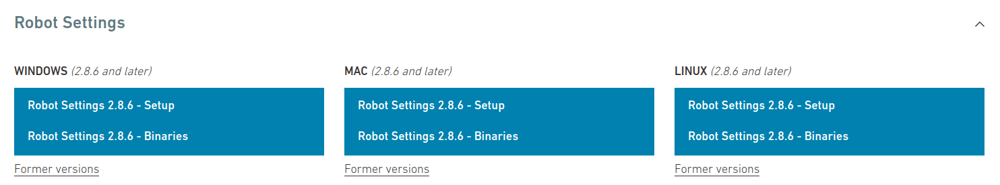
Under the Robot Settings > Linux category, choose Robot Settings 2.1.x - Setup.
Installing Robot Settings
After the software downloads, open your file manager and navigate to your downloads directory. Right click the background, and select "Open in Terminal".
Once in a terminal, give the installer execute permissions:
Then, run the installer.
The operating system will then prompt you for your administrator password. Enter it, then follow the prompts on the Robot Settings installer. When prompted to choose an install location, leave it at the default/opt/robot_settings. The installer will prompt you for your administrator password.
When asked if you want to run the software, make sure to uncheck the box. Then, click finish.
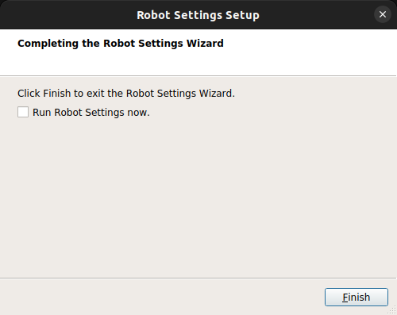
Patching zlib
Like most Aldebaran packages, Robot Settings was developed targeting a version of Ubuntu from 2016. Because of this, we must patch a library in order for the application to launch.
Go back to your terminal, and run the following commands.
cd /opt/robot_settings/lib/
sudo mv libz.so.1 libz.so.1.old
sudo ln -s /lib/x86_64-linux-gnu/libz.so.1
This replaces the bundled version of zlib with the version currently installed on the system.
Robot Settings is now successfully installed. Launch it from the Ubuntu Applications Menu.
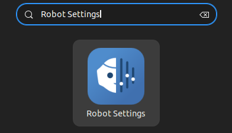